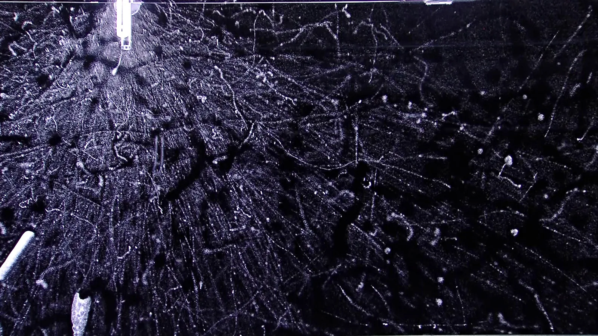
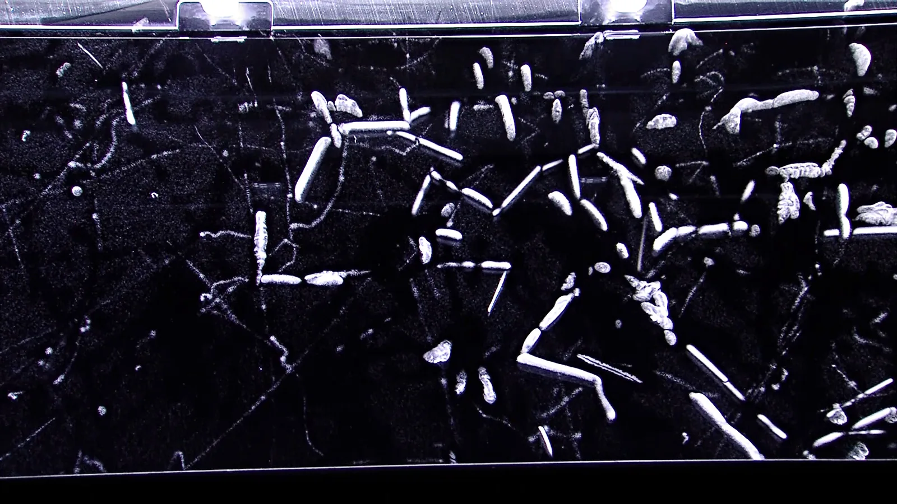

Atomiydin ja radioaktiivinen hajoaminen
Miksi savuilmaisimen pienestä americiumnäytteestä lähtee jatkuvasti hiukkasia, ja mitä americiumytimelle tapahtuu, kun hiukkanen lähtee?
Pohjatiedot
- Fotonin energia on $E = hf = \tfrac{hc}{\lambda}$, ja energia voidaan ilmoittaa elektronivoltteinaluku Valosähköinen ilmiö ja fotoni
- Siirtymässä syntyvän fotonin energia on energiatasojen erotusluku Vetyatomin energiatasot ja Bohrin malli
Ydinpolku: etene vaiheiden mukaan. Ydinpolkuun kuuluvat laskujen lisäksi tutkimukset, selitykset ja kuvaajat. Valinnainen-merkityt tehtävät tarjoavat lisäharjoittelua. Valinnaisia tehtäviä 4.
Pohdinta
Melkein jokaisen asunnon katossa on savuilmaisin, ja monen sisällä on pieni americium-241-näyte. Siitä lähtee joka sekunti kymmeniätuhansia alfahiukkasia, jotka ionisoivat ilmaa kahden metallilevyn välissä ja tekevät siitä hieman sähköä johtavaa. Kun savu pääsee kammioon, virta pienenee ja hälytin soi. Näyte toimii näin vuosikymmeniä.
Mitä americiumytimelle tapahtuu, kun alfahiukkanen lähtee, ja miksi ytimestä tulee lisäksi gammasäteilyä?
Valinnainen Kertaa: energiatasot ja fotoni
Ennusta
Tee ennusteet ennen tutkimista 2 kysymystä
Ennuste 1: alfahiukkanen lähtee
Ennuste 2: elektroni lähtee ytimestä
Tutki
Simulaatio
Käyttöohje
Hajoa siirtää sarjaa yhden vaiheen eteenpäin: oikealla ydin lähettää hiukkasen, ja kartalle kasvaa nuoli uuteen ruutuun. Kartan vaaka-akselilla on neutroniluku $N$, pystyakselilla järjestysluku $Z$ ja alkuaineen tunnus. Liukusäätimellä voit siirtyä suoraan mihin tahansa sarjan vaiheeseen $k$ ($0$–$14$). Alkuun palauttaa uraani-238:n. Lukemissa näkyvät ytimen merkintä, $Z$, $N$, $A$, seuraava hajoamistapa ja edellisen hajoamisen yhtälö. Nopeus muuttaa vain animaation tahtia.
Mallin oletukset
Sarjan ytimet ja hajoamistavat ovat yhdysvaltalaisen ydintietokeskuksen NNDC:n NuDat 3 -tietokannan tietoja (ENSDF-arvot). Kustakin ytimestä on valittu sen yleisin hajoamistapa; muutama ydin, kuten vismutti-214, hajoaa hyvin pienellä todennäköisyydellä myös toisella tavalla. Protaktinium-234 syntyy sarjassa pitkäikäiseen viritystilaansa, joka hajoaa beeta miinus -hajoamisella. Vihreät ruudut ovat alueen pysyviä ytimiä; vismutti-209 hajoaa niin hitaasti, että se on käytännössä pysyvä. Ytimen kuva on kaavamainen: protonit ja neutronit eivät ole ytimessä paikoillaan, eikä nukleonien järjestys merkitse mitään. Yksittäisen ytimen hajoamishetkeä ei voi ennustaa; malli näyttää vain, mihin kukin hajoaminen johtaa, ei sitä, kuinka kauan se kestää.
Laskennan selitys
Malli ei laske hajoamista vaan näyttää tietokannan tiedot. Lukemien neutroniluku on $N = A - Z$. Hajoamisyhtälössä massaluku ja varausluku säilyvät, ja tytärytimen alkuaine luetaan sen järjestysluvusta.
Paina Hajoa ja seuraa, mihin ydin siirtyy nuklidikartalla ja mitä siitä lähtee.
Koe 1: uraani-238:n hajoamissarja
Testaa ennusteet. Aloita uraani-238:sta ($k = 0$) ja kirjaa jokainen vaihe: muuta vaihetta yksi kerrallaan tai paina Hajoa ja kirjaa sitten. Kirjaa ainakin vaiheet $0$–$5$. Vertaa peräkkäisiä rivejä: kuinka paljon $Z$, $N$ ja $A$ muuttuvat alfahajoamisessa ja kuinka paljon beeta miinus -hajoamisessa?
Alkutila: sarjan vaihe $k$ = $0$. Vakiona: ei mitään. Muutetaan: sarjan vaihe $k$.
| sarjan vaihe $k$ | $Z$ | $N$ | $A$ | hajoaa seuraavaksi |
|---|
Lisää tutkittavaa 2 tehtävää
Johtopäätös: mitä hajoamiset tekevät ytimelle?
Kirjoita taulukkosi perusteella, miten $Z$, $N$ ja $A$ muuttuvat alfahajoamisessa ja beeta miinus -hajoamisessa. Selitä muutokset sillä, mitä ytimestä lähtee. Mihin sarja päättyy?
Mallivastaus
Alfahajoamisessa $Z$ ja $N$ pienenevät kumpikin kahdella ja $A$ neljällä, esimerkiksi ${}^{238}_{92}\text{U} \to {}^{234}_{90}\text{Th}$, koska ytimestä lähtee heliumydin, jossa on kaksi protonia ja kaksi neutronia. Beeta miinus -hajoamisessa $Z$ kasvaa yhdellä, $N$ pienenee yhdellä ja $A$ pysyy, esimerkiksi ${}^{234}_{90}\text{Th} \to {}^{234}_{91}\text{Pa}$, koska neutroni muuttuu protoniksi ja syntyvä elektroni lähtee. Kartalla alfa vie ytimen kaksi ruutua alas ja vasemmalle, beeta yhden ylös ja vasemmalle. Sarjassa on $8$ alfa- ja $6$ beetahajoamista, ja se päättyy pysyvään lyijy-206:een ${}^{206}_{82}\text{Pb}$. Tiedot ovat NNDC:n tietokannasta.
Arvioi oma vastauksesi
Rastita kohdat, jotka omassa vastauksessasi jo on.
Kertaa asia teoriasta ja harjoittele tehtävillä.
Koboltti-60:n gammaspektri
Mitattu aineisto · Gammaenergiat: NNDC NuDat 3 (ENSDF), mitatut arvot; piikkien muoto ja korkeus on piirretty kaavamaisesti.
Koboltti-60 hajoaa beeta miinus -hajoamisella nikkeli-60:ksi, ja sen jälkeen nikkeliydin lähettää gammasäteilyä. Kuvassa on gammailmaisimella mitatun spektrin muoto: fotonien määrä fotonin energian funktiona. Spektrissä on kaksi kapeaa piikkiä. Mitattujen tietojen mukaan ydin lähettää lähes jokaisessa hajoamisessa molemmat fotonit peräkkäin.
Nikkeli-60-ydin syntyy viritystilaan ja palaa perustilaan lähettämällä nämä kaksi fotonia peräkkäin. Kuinka suuri on viritystilan energia perustilan yläpuolella? Vastaa kiloelektronivoltteina.
Vihje 1: ohjaava kysymys
Kumpikin fotoni vie ytimeltä energian, joka on kahden tason erotus.
Vihje 2: mikä yhteys
Ydin putoaa ensin viritystilasta välitasolle ja sitten välitasolta perustilaan. Fotonien energiat ovat näiden kahden pudotuksen suuruiset.
Vihje 3: välivaihe
Lue kummankin piikin energia kuvasta ja laske energiat yhteen.
Näytä ratkaisu
Annettu
gammafotonien energiat $E_1 = 1173{,}2\,\text{keV}$ ja $E_2 = 1332{,}5\,\text{keV}$, jotka ydin lähettää peräkkäin palatessaan viritystilasta perustilaan
Kysytty
viritystilan energia $E^{\ast}$ perustilan yläpuolella kiloelektronivoltteina
Kuvaajan lukeminen
Spektrin kaksi piikkiä ovat kohdissa $1173{,}2\,\text{keV}$ ja $1332{,}5\,\text{keV}$. Muita piikkejä ei ole, joten ydin lähettää vain nämä kaksi fotonienergiaa.
Periaate
Ytimen energia on kvantittunut, ja kumpikin fotoni vie tasojen erotuksen. Energia säilyy: ydin putoaa viritystilasta välitasolle ja välitasolta perustilaan, joten pudotusten summa on viritystilan energia perustilan yläpuolella.
Kaava
$E^{\ast} - E_\text{v} = E_1$ ja $E_\text{v} - 0 = E_2$, joista $E^{\ast} = E_1 + E_2$
Muunnokset
Ei tarvita, koska energiat ja vastaus ovat kiloelektronivoltteina.
Sijoitus
Vastaus
$2505{,}7\,\text{keV}$
Eli noin $2{,}51\,\text{MeV}$; yhteenlaskussa tarkkuus on yhden desimaalin, kuten fotonienergioissa.
Järkevyys
Tulos on suurempi kuin kumpikaan fotonienergia, kuten yhteen tasoon kahdessa vaiheessa palaavalle ytimelle pitää. NNDC:n tietokannan mukaan nikkeli-60:n viritystila on $2505{,}8\,\text{keV}$ perustilan yläpuolella. Fotonien summa jää siitä noin $0{,}1\,\text{keV}$. Ero on suurimmaksi osaksi pyöristystä: rekyyli eli ytimen saama pieni liike-energia fotonin lähtiessä on vain noin $0{,}03\,\text{keV}$. Energiat ovat satojatuhansia kertoja atomin siirtymien elektronivoltteja suurempia.
Teoria
Ydinajatus
Ydin koostuu nukleoneista
Atomin massasta lähes kaikki on sen keskellä olevassa ytimessä. Ytimen halkaisija on luokkaa $10^{-15}$–$10^{-14}\,\text{m}$, kun atomin halkaisija on noin $10^{-10}\,\text{m}$: ydin on kymmeniätuhansia kertoja atomia pienempi. Ydin koostuu protoneista ja neutroneista, joiden yhteinen nimi on nukleoni. Protonin varaus on $+e$, neutroni on sähköisesti neutraali.
Ydintä kuvataan kahdella luvulla. Järjestysluku $Z$ on protonien määrä, ja se määrää alkuaineen. Massaluku $A$ on nukleonien määrä, joten neutroniluku on $N = A - Z$. Ydin merkitään ${}^{A}_{Z}\text{X}$, missä X on alkuaineen tunnus. Saman alkuaineen ytimiä, joissa on eri määrä neutroneja, sanotaan alkuaineen isotoopeiksi: hiili-12 ${}^{12}_{6}\text{C}$ ja hiili-14 ${}^{14}_{6}\text{C}$ ovat hiilen isotooppeja. Tietyn ydinlajin nimi on nuklidi.
Miksi osa ytimistä hajoaa
Protonit hylkivät toisiaan sähköisesti, mutta ydin pysyy koossa vahvan vuorovaikutuksen ansiosta. Se vetää nukleoneja toisiinsa, mutta vain hyvin lyhyellä, ytimen kokoisella etäisyydellä. Neutronit lisäävät vetoa lisäämättä hylkimistä, joten pysyvissä raskaissa ytimissä on enemmän neutroneja kuin protoneja.
Vain tietyt protonien ja neutronien yhdistelmät ovat pysyviä. Kun ytimiä piirretään nuklidikarttaan, jonka akseleilla ovat $N$ ja $Z$, pysyvät ytimet muodostavat kapean vyön. Vyön ulkopuolinen ydin on epävakaa eli radioaktiivinen: se hajoaa ajan myötä itsestään ja lähettää samalla säteilyä. Alfa- ja beetahajoamisessa ydin muuttuu toiseksi nuklidiksi, mutta gammahajoamisessa viritetty ydin vain siirtyy alemmalle energiatasolle ja pysyy samana nuklidina. Yksittäisen ytimen hajoamishetkeä ei voi ennustaa; hajoaminen on satunnaista.


Alfa-, beeta- ja gammahajoaminen
Alfahajoamisessa ytimestä lähtee alfahiukkanen eli heliumydin ${}^{4}_{2}\text{He}$, jossa on kaksi protonia ja kaksi neutronia. Se on tyypillistä raskaille ytimille, kuten uraanille, radiumille ja savuilmaisimen americiumille.
Beetahajoamisessa ytimessä on liikaa tai liian vähän neutroneja suhteessa protoneihin. Beeta miinus -hajoamisessa ytimen neutroni muuttuu protoniksi, ja ytimestä lähtee elektroni ja antineutriino. Elektroni ei ole ollut ytimessä valmiina, vaan se syntyy hajoamisessa. Beeta plus -hajoamisessa protoni muuttuu neutroniksi, ja ytimestä lähtee positroni eli elektronin antihiukkanen sekä neutriino. Beetahajoamisen aiheuttaa heikko vuorovaikutus.
Beetahajoamisen kaltainen on elektronisieppaus: ydin sieppaa atomin sisimmältä elektronikuorelta elektronin, protoni muuttuu neutroniksi ja ytimestä lähtee elektronineutriino ${}^{0}_{0}\nu_\text{e}$. Yleisesti
$${}^{A}_{Z}\text{X} + {}^{0}_{-1}\text{e} \to {}^{A}_{Z-1}\text{Y} + {}^{0}_{0}\nu_\text{e}$$
missä X on emoydin, Y tytärydin ja $Z$ järjestysluku. Esimerkiksi ${}^{7}_{4}\text{Be} + {}^{0}_{-1}\text{e} \to {}^{7}_{3}\text{Li} + {}^{0}_{0}\nu_\text{e}$. Ydin muuttuu kuten beeta plus -hajoamisessa ($Z - 1$), ja se on mahdollista silloinkin, kun positronin synnyttämiseen ei riitä energiaa.
Gammahajoamisessa viritystilassa oleva ydin, merkitty tähdellä ${}^{A}_{Z}\text{X}^{\ast}$, siirtyy alemmalle energiatasolle ja lähettää gammafotonin. Ydin pysyy samana nuklidina. Viritystila syntyy usein edellisessä alfa- tai beetahajoamisessa, joten gammasäteily seuraa niitä.
Ytimen energiatasot ja gammaspektri
Ytimen energia on kvantittunut kuten atomin elektronien energia. Kun ydin siirtyy ylemmältä energiatasolta alemmalle, lähtevän gammafotonin energia on tasojen erotus, aivan kuten vetyatomin siirtymässä luvussa Vetyatomin energiatasot ja Bohrin malli. Siksi ytimen gammaspektri on viivaspektri: jokainen piikki kertoo yhden tasoparin erotuksen. Ero on mittakaavassa. Atomin siirtymät ovat elektronivoltteja, ytimen tasojen erot tyypillisesti kymmeniä kiloelektronivoltteja tai enemmän, eli kymmeniätuhansia tai satojatuhansia kertoja enemmän.
Esimerkiksi koboltti-60 hajoaa beeta miinus -hajoamisella nikkeli-60:n viritystilaan, jonka energia on $2505{,}8\,\text{keV}$ perustilan yläpuolella. Ydin palaa perustilaan välitason $1332{,}5\,\text{keV}$ kautta, ja gammaspektrissä näkyy kaksi viivaa: $1173{,}2\,\text{keV}$ ja $1332{,}5\,\text{keV}$ (NNDC:n NuDat 3 -tietokanta, ENSDF-arvot). Fotonienergioiden summa jää tasosta noin $0{,}1\,\text{keV}$. Suurin osa tästä erosta on pyöristystä, sillä rekyyli eli ytimen saama pieni liike-energia fotonin lähtiessä on vain noin $0{,}03\,\text{keV}$. Alfahiukkasilla on samoin vain tietyt energiat. Beetahiukkasten energiat sen sijaan jakautuvat jatkuvasti, koska hajoamisenergia jakautuu elektronin ja antineutriinon kesken.
Hajoamisyhtälöt
Hajoamisyhtälössä säilyvät sekä massaluku eli nukleonien kokonaismäärä että varausluku eli alaindeksien summa. Elektroni merkitään ${}^{0}_{-1}\text{e}$ ja positroni ${}^{0}_{+1}\text{e}$, koska niiden massaluku on nolla ja varaus $-e$ tai $+e$. Alfahajoaminen on
$${}^{A}_{Z}\text{X} \to {}^{A-4}_{Z-2}\text{Y} + {}^{4}_{2}\text{He}$$
beeta miinus -hajoaminen
$${}^{A}_{Z}\text{X} \to {}^{A}_{Z+1}\text{Y} + {}^{0}_{-1}\text{e} + \bar{\nu}$$
beeta plus -hajoaminen
$${}^{A}_{Z}\text{X} \to {}^{A}_{Z-1}\text{Y} + {}^{0}_{+1}\text{e} + \nu$$
ja gammahajoaminen
$${}^{A}_{Z}\text{X}^{\ast} \to {}^{A}_{Z}\text{X} + \gamma$$
missä X on hajoava emoydin, Y syntyvä tytärydin, $A$ massaluku, $Z$ järjestysluku, $\bar{\nu}$ antineutriino, $\nu$ neutriino ja $\gamma$ gammafotoni. Tyttärytimen alkuaine luetaan jaksollisesta järjestelmästä sen järjestysluvusta.
Gammafotonin energia on ytimen tasojen erotus, ja sen aallonpituus saadaan fotonin energiasta:
$$\begin{aligned} E_\gamma &= E_\text{y} - E_\text{a} \\ \lambda &= \frac{hc}{E_\gamma} \end{aligned}$$
missä $E_\text{y}$ ja $E_\text{a}$ ovat ylemmän ja alemman tason energiat, $h = 6{,}626 \cdot 10^{-34}\,\text{J}\,\text{s}$ Planckin vakio ja $c = 2{,}998 \cdot 10^{8}\,\text{m/s}$ valon nopeus. Kiloelektronivoltit muunnetaan jouleiksi sijoittamalla $1\,\text{keV} = 1000\,\text{eV}$ ja $1\,\text{eV} = 1{,}602 \cdot 10^{-19}\,\text{J}$.
Yleinen virhekäsitys
Moni ajattelee, että beetahiukkanen on ytimessä valmiina oleva elektroni. Ytimessä ei ole elektroneja: elektroni ja antineutriino syntyvät, kun neutroni muuttuu protoniksi. Siksi järjestysluku kasvaa yhdellä, vaikka ytimestä lähtee negatiivinen hiukkanen.
Toinen virhe on pitää gammahajoamista alkuaineen muutoksena. Gammafotoni vie vain energiaa: protonien ja neutronien määrät pysyvät, ja ydin siirtyy vain alemmalle energiatasolle. Alkuaine vaihtuu vain, kun protonien määrä muuttuu: alfa- ja beetahajoamisessa sekä elektronisieppauksessa.
Tiivistelmä
- Ydin koostuu nukleoneista: $Z$ protonia ja $N = A - Z$ neutronia. Saman alkuaineen isotoopeilla on sama $Z$ mutta eri $N$.
- Radioaktiivinen ydin hajoaa itsestään ja satunnaisesti. Alfahajoamisessa lähtee ${}^{4}_{2}\text{He}$ ($Z - 2$, $A - 4$), beeta miinus -hajoamisessa elektroni ja antineutriino ($Z + 1$), beeta plus -hajoamisessa positroni ja neutriino ($Z - 1$).
- Elektronisieppauksessa ydin sieppaa elektronin ja lähettää neutriinon ($Z - 1$).
- Hajoamisyhtälössä massaluku ja varausluku säilyvät.
- Ytimen energia on kvantittunut. Gammafotonin energia on ytimen tasojen erotus $E_\gamma = E_\text{y} - E_\text{a}$, tyypillisesti kymmeniä tai satoja kiloelektronivoltteja tai megaelektronivoltteja, joten gammaspektri on viivaspektri.
Valinnainen Palaa ennusteisiisi
Vertaa ennusteitasi sarjan tietoihin. Palaa sitten alun kysymykseen: mikä ydin syntyy, kun americium-241 ${}^{241}_{95}\text{Am}$ lähettää alfahiukkasen, ja miksi samalla voi syntyä gammafotoni?
Muuttaisitko ennustettasi?
Esimerkit
Kun olet opiskellut luvun teorian, siirry ohjattuihin esimerkkeihin. Ensimmäisessä seuraat mallilaskua vaihe vaiheelta, seuraavissa teet valinnat itse, ja vihjeet auttavat, jos jäät jumiin.
Esimerkki 1: Cesium-137:n hajoaminen
Cesium-137 ${}^{137}_{55}\text{Cs}$ hajoaa beeta miinus -hajoamisella. Tytärydin syntyy useimmiten viritystilaan, joka purkautuu lähettämällä gammafotonin, jonka energia on $661{,}7\,\text{keV}$ (NNDC NuDat 3). Mikä tytärydin on, ja kuinka suuri on gammafotonin aallonpituus?
Vaihe 1/7
Tunnetut ja kysytty. Emoydin ${}^{137}_{55}\text{Cs}$, beeta miinus -hajoaminen, gammafotonin energia $E_\gamma = 661{,}7\,\text{keV}$, $h = 6{,}626 \cdot 10^{-34}\,\text{J}\,\text{s}$ ja $c = 2{,}998 \cdot 10^{8}\,\text{m/s}$. Kysytään tyttärytimen järjestyslukua $Z'$ ja massalukua $A'$ sekä fotonin aallonpituutta $\lambda$.
Vaihe 2/7
Periaate. Beeta miinus -hajoamisessa neutroni muuttuu protoniksi, joten massaluku ja varausluku säilyvät, kun elektroni ${}^{0}_{-1}\text{e}$ lasketaan mukaan. Gammafotonin energia on viritystilan ja perustilan erotus, ja fotonin energia on $\tfrac{hc}{\lambda}$.
Vaihe 3/7
Kaava ratkaistuna. Säilymislaeista ja fotonin energiasta:
$$\begin{aligned} A &= A' + 0, \quad Z = Z' - 1 \\ A' &= A, \quad Z' = Z + 1 \\ \lambda &= \frac{hc}{E_\gamma} \end{aligned}$$
Vaihe 4/7
Yksikkömuunnokset. Energia muunnetaan jouleiksi sijoittamalla $1\,\text{keV} = 1000\,\text{eV}$ ja $1\,\text{eV} = 1{,}602 \cdot 10^{-19}\,\text{J}$:
Vaihe 5/7
Sijoitus. Tytärytimen luvut ja aallonpituus:
$$\begin{aligned} A' &= 137, \quad Z' = 55 + 1 = 56 \\[6pt] hc &= 6{,}626 \cdot 10^{-34}\,\text{J}\,\text{s} \\ &\quad \cdot 2{,}998 \cdot 10^{8}\,\text{m/s} \\ &= 1{,}9865 \cdot 10^{-25}\,\text{J}\,\text{m} \\[6pt] \lambda &= \frac{1{,}9865 \cdot 10^{-25}\,\text{J}\,\text{m}}{1{,}0600 \cdot 10^{-13}\,\text{J}} \\ &= 1{,}8740 \cdot 10^{-12}\,\text{m} \end{aligned}$$
Vaihe 6/7
Tulos. Järjestysluku $56$ on barium, joten tytärydin on ${}^{137}_{56}\text{Ba}$: ${}^{137}_{55}\text{Cs} \to {}^{137}_{56}\text{Ba} + {}^{0}_{-1}\text{e} + \bar{\nu}$. Aallonpituus on
neljä merkitsevää numeroa kuten energiassa $661{,}7\,\text{keV}$.
Vaihe 7/7
Järkevyys. Yhtälön molemmilla puolilla massaluku on $137$ ja varausluku $55 = 56 - 1$. Näkyvän valon aallonpituus $500\,\text{nm}$ on noin $270\,000$ kertaa pidempi, joten fotonin energia on satojatuhansia kertoja suurempi kuin näkyvän valon fotonin: tämä on ytimen tasojen mittakaava.
Valinnainen Esimerkki 2: Etsi virhe
Esimerkki 3: Sovella uuteen tilanteeseen
Myös uraani-235 ${}^{235}_{92}\text{U}$ hajoaa luonnossa sarjana, joka päättyy pysyvään lyijy-207:ään ${}^{207}_{82}\text{Pb}$. Sarjassa on vain alfa- ja beeta miinus -hajoamisia. Kuinka monta alfahajoamista sarjassa on?
Vihje 1: ohjaava kysymys
Mikä hajoamislaji muuttaa massalukua, ja kuinka paljon?
Vihje 2: mikä yhteys
Beeta miinus -hajoaminen ei muuta massalukua, joten koko massaluvun muutos tulee alfahajoamisista, kukin $4$.
Vihje 3: välivaihe
Massaluku pienenee $235 - 207 = 28$. Jaa tämä yhden alfahajoamisen muutoksella.
Näytä ratkaisu
Annettu
alkuydin ${}^{235}_{92}\text{U}$, loppuydin ${}^{207}_{82}\text{Pb}$; sarjassa vain alfa- ja beeta miinus -hajoamisia
Kysytty
alfahajoamisten lukumäärä $n_\alpha$
Periaate
Massaluku säilyy jokaisessa hajoamisessa. Alfahiukkanen vie neljä nukleonia, mutta beeta miinus -hajoaminen ei muuta massalukua, koska elektronin massaluku on nolla. Siksi massaluvun koko muutos tulee alfahajoamisista.
Kaava
$A_\text{alku} - A_\text{loppu} = 4 n_\alpha$, josta
Muunnokset
Ei tarvita, koska massaluvut ovat lukumääriä.
Sijoitus
Vastaus
$7$
Alfahajoamista; tulos on tarkka kokonaisluku, koska nukleoneja lasketaan kappaleina.
Järkevyys
Seitsemän alfahajoamista pienentäisi järjestyslukua $14$:llä arvoon $78$. Loppuytimen järjestysluku on $82$, joten sarjassa on oltava $4$ beeta miinus -hajoamista, jotka kumpikin kasvattavat sitä yhdellä: $92 - 14 + 4 = 82$. Uraani-238:n sarjassa on samoin $8$ alfa- ja $6$ beetahajoamista.
Kertaa luvun käsitteet
Jos valitset Kertaa myöhemmin, kortti siirtyy kertauspakkaasi.
- Nukleoni
- Yhteisnimitys atomiytimen protoneille ja neutroneille.
- Protoni
- Positiivisesti varautunut nukleoni, jonka lukumäärä määrää alkuaineen.
- Neutroni
- Sähköisesti neutraali nukleoni, jonka lukumäärä voi vaihdella saman alkuaineen ytimissä.
- Järjestysluku
- Protonien lukumäärä atomiytimessä.
- Massaluku
- Protonien ja neutronien yhteenlaskettu lukumäärä ytimessä.
- Isotooppi
- Saman alkuaineen ydin, jossa neutronien määrä poikkeaa toisesta saman alkuaineen ytimestä.
- Radioaktiivisuus
- Epästabiili atomiydin muuttuu itsestään toiseksi ytimeksi ja lähettää samalla säteilyä.
- Emoydin
- Radioaktiivisen hajoamisen alkuperäinen epästabiili ydin.
- Tytärydin
- Radioaktiivisessa hajoamisessa syntyvä uusi atomiydin.
- Alfahajoaminen
- Ydin lähettää kaksi protonia ja kaksi neutronia sisältävän heliumytimen.
- $\beta^-$-hajoaminen
- Ytimen neutroni muuttuu protoniksi ja samalla syntyy elektroni sekä antineutriino.
- $\beta^+$-hajoaminen
- Ytimen protoni muuttuu neutroniksi ja samalla syntyy positroni sekä neutriino.
- Elektronisieppaus
- Ydin sieppaa elektronin, jolloin protoni muuttuu neutroniksi ja samalla syntyy neutriino.
- Gammahajoaminen
- Viritystilassa oleva ydin siirtyy alemmalle energiatasolle lähettämällä suurienergisen fotonin.
- Neutriino
- Hyvin kevyt ja varaukseton hiukkanen, joka vuorovaikuttaa aineen kanssa erittäin heikosti.
Tehtävät
Taso 1 · perusharjoitus 8 tehtävää
Yksi kaava tai yksi päättelyaskel. Ydintehtävät ensin, loput lisäharjoitusta.
- Tehtävä 8-1
Ydinvoimalan polttoaineen uraani-235:n ydin on ${}^{235}_{92}\text{U}$. Kuinka monta neutronia ytimessä on?
Vastaus
$143$
Näytä ratkaisu
Annettu
uraani-235:n ydin ${}^{235}_{92}\text{U}$: massaluku $A = 235$, järjestysluku $Z = 92$
Kysytty
neutronien määrä $N$
Periaate
Massaluku on ytimen kaikkien nukleonien määrä ja järjestysluku protonien määrä. Loput nukleonit ovat neutroneja.
Kaava
$A = Z + N$, josta $N = A - Z$
Muunnokset
Ei tarvita, koska luvut ovat kappalemääriä.
Sijoitus
$N = 235 - 92 = 143$
Vastaus
$143$
Tulos on neutronien tarkka lukumäärä, koska nukleoneja lasketaan kappaleina.
Järkevyys
Neutroneja on enemmän kuin protoneja, kuten raskaissa ytimissä kuuluu: $143 : 92 \approx 1{,}6$. Uraani-238:ssa neutroneja on kolme enemmän, $146$, koska isotoopeilla on sama $Z$ mutta eri $N$.
- Tehtävä 8-2
Sisäilman radon-222 ${}^{222}_{86}\text{Rn}$ hajoaa alfahajoamisella. Mikä on syntyvän tytärytimen massaluku?
Vastaus
$218$
Näytä ratkaisu
Annettu
emoydin ${}^{222}_{86}\text{Rn}$, alfahajoaminen; alfahiukkanen on ${}^{4}_{2}\text{He}$
Kysytty
tytärytimen massaluku $A'$
Periaate
Hajoamisyhtälössä massaluku säilyy: emoytimen nukleonit jakautuvat tytärytimelle ja alfahiukkaselle, jossa on neljä nukleonia.
Kaava
$A = A' + 4$, josta $A' = A - 4$
Muunnokset
Ei tarvita, koska massaluvut ovat kappalemääriä.
Sijoitus
$A' = 222 - 4 = 218$
Vastaus
$218$
Tulos on tarkka kokonaisluku. Tytärydin on polonium-218 ${}^{218}_{84}\text{Po}$, koska samalla $Z$ pienenee kahdella.
Järkevyys
Yhtälö ${}^{222}_{86}\text{Rn} \to {}^{218}_{84}\text{Po} + {}^{4}_{2}\text{He}$ täsmää: $222 = 218 + 4$ ja $86 = 84 + 2$. Sama askel näkyy uraani-238:n sarjassa radonista poloniumiin.
- Tehtävä 8-3Ydintehtävä
Hiili-14 ${}^{14}_{6}\text{C}$ hajoaa beeta miinus -hajoamisella. Mikä on syntyvän tytärytimen järjestysluku?
Vastaus
$7$
Näytä ratkaisu
Annettu
emoydin ${}^{14}_{6}\text{C}$, beeta miinus -hajoaminen; elektroni on ${}^{0}_{-1}\text{e}$
Kysytty
tytärytimen järjestysluku $Z'$
Periaate
Beeta miinus -hajoamisessa neutroni muuttuu protoniksi ja syntyvä elektroni lähtee. Varausluku säilyy, kun elektronin varausluku $-1$ lasketaan mukaan; antineutriino on neutraali.
Kaava
$Z = Z' + (-1)$, josta $Z' = Z + 1$
Muunnokset
Ei tarvita, koska järjestysluvut ovat kappalemääriä.
Sijoitus
$Z' = 6 + 1 = 7$
Vastaus
$7$
Tulos on tarkka kokonaisluku. Järjestysluku $7$ on typpi, joten tytärydin on ${}^{14}_{7}\text{N}$.
Järkevyys
Massaluku pysyy $14$:ssä ja varausluku täsmää: $6 = 7 - 1$. Hiili-14:ssä on kahdeksan neutronia ja kuusi protonia, eli neutroneja on enemmän kuin kevyelle pysyvälle ytimelle sopii, joten beeta miinus -hajoaminen siirtää sen kohti pysyvien ytimien vyötä.
- Tehtävä 8-4
Savuilmaisimen americium-241 lähettää gammafotoneja, joiden energia on $59{,}54\,\text{keV}$ (NNDC NuDat 3). Laske fotonin aallonpituus pikometreinä ($1\,\text{pm} = 10^{-12}\,\text{m}$) ($h = 6{,}626 \cdot 10^{-34}\,\text{J}\,\text{s}$, $c = 2{,}998 \cdot 10^{8}\,\text{m/s}$, $1\,\text{keV} = 1000\,\text{eV}$, $1\,\text{eV} = 1{,}602 \cdot 10^{-19}\,\text{J}$).
Vastaus
$20{,}8\,\text{pm}$
Näytä ratkaisu
Annettu
gammafotonin energia $E_\gamma = 59{,}54\,\text{keV}$, $h = 6{,}626 \cdot 10^{-34}\,\text{J}\,\text{s}$, $c = 2{,}998 \cdot 10^{8}\,\text{m/s}$, $1\,\text{keV} = 1000\,\text{eV}$, $1\,\text{eV} = 1{,}602 \cdot 10^{-19}\,\text{J}$
Kysytty
fotonin aallonpituus $\lambda$ pikometreinä
Periaate
Gammasäteily on sähkömagneettista säteilyä, joten fotonin energia on $\tfrac{hc}{\lambda}$ kuten näkyvän valon fotonilla.
Kaava
$E_\gamma = \dfrac{hc}{\lambda}$, josta $\lambda = \dfrac{hc}{E_\gamma}$
Muunnokset
$E_\gamma$$= 59{,}54\,\text{keV}$$= 59{,}54 \cdot 1000 \cdot 1{,}602 \cdot 10^{-19}\,\text{J}$$= 9{,}5383 \cdot 10^{-15}\,\text{J}$lopuksi $1\,\text{m} = 10^{12}\,\text{pm}$.
Sijoitus
Tulo
$hc$$= 6{,}626 \cdot 10^{-34}\,\text{J}\,\text{s} \cdot 2{,}998 \cdot 10^{8}\,\text{m/s}$$= 1{,}9865 \cdot 10^{-25}\,\text{J}\,\text{m}$$\lambda$$= \dfrac{1{,}9865 \cdot 10^{-25}\,\text{J}\,\text{m}}{9{,}5383 \cdot 10^{-15}\,\text{J}}$$= 2{,}0826 \cdot 10^{-11}\,\text{m}$$= 20{,}826\,\text{pm}$Vastaus
$20{,}8\,\text{pm}$
Kolme merkitsevää numeroa; energia on annettu neljällä numerolla, ja $20{,}83\,\text{pm}$ on yhtä oikein.
Järkevyys
Esimerkin cesiumin fotoni $661{,}7\,\text{keV}$ on noin $11$ kertaa energisempi, ja sen aallonpituus $1{,}874\,\text{pm}$ on noin $11$ kertaa lyhyempi: $20{,}8 : 1{,}874 \approx 11$. Aallonpituus on pienempi kuin atomin halkaisija noin $100\,\text{pm}$.
- Tehtävä 8-5
PET-kuvauksessa käytetty fluori-18 ${}^{18}_{9}\text{F}$ hajoaa beeta plus -hajoamisella. Kuinka monta neutronia tytärytimessä on?
Vastaus
$10$
Näytä ratkaisu
Annettu
emoydin ${}^{18}_{9}\text{F}$, beeta plus -hajoaminen; positroni on ${}^{0}_{+1}\text{e}$
Kysytty
tytärytimen neutroniluku $N'$
Periaate
Beeta plus -hajoamisessa protoni muuttuu neutroniksi ja ytimestä lähtevät positroni ja neutriino. Massaluku säilyy, ja varausluku säilyy, kun positronin varausluku $+1$ lasketaan mukaan.
Kaava
$A' = A$ ja $Z = Z' + 1$, joten $Z' = Z - 1$ ja $N' = A' - Z' = A - (Z - 1)$
Muunnokset
Ei tarvita, koska luvut ovat kappalemääriä.
Sijoitus
$Z' = 9 - 1 = 8$ ja $N' = 18 - 8 = 10$
Vastaus
$10$
Tulos on neutronien tarkka lukumäärä. Tytärydin on happi-18 ${}^{18}_{8}\text{O}$.
Järkevyys
Emoytimessä on $18 - 9 = 9$ neutronia, ja protonin muuttuminen neutroniksi lisää niitä yhdellä: $9 + 1 = 10$. Yhtälö ${}^{18}_{9}\text{F} \to {}^{18}_{8}\text{O} + {}^{0}_{+1}\text{e} + \nu$ täsmää: $18 = 18 + 0$ ja $9 = 8 + 1$.
- Tehtävä 8-6Ydintehtävä
Radioaktiivinen ydin voi hajota usealla tavalla. Mikä seuraavista hajoamisista kasvattaa ytimen järjestyslukua $Z$ yhdellä ja jättää massaluvun $A$ ennalleen?
Vastaus
Beeta miinus -hajoaminen, koska ytimessä neutroni muuttuu protoniksi ja elektroni lähtee pois
Näytä ratkaisu
Kysytty
mikä hajoaminen kasvattaa järjestyslukua $Z$ yhdellä ja jättää massaluvun $A$ ennalleen
Periaate
Hajoamisyhtälössä massaluku ja varausluku säilyvät. Järjestysluku kasvaa yhdellä vain, kun ytimen neutroni muuttuu protoniksi, ja nukleonien määrä pysyy samana. Käydään hajoamistavat läpi: alfahajoaminen muuttaa $Z$:aa ja $A$:ta ($Z - 2$, $A - 4$), beeta plus -hajoaminen pienentää $Z$:aa, ja gammahajoaminen ei muuta kumpaakaan.
Mallivastaus
Oikea vaihtoehto on beeta miinus -hajoaminen, jossa ytimessä neutroni muuttuu protoniksi ja elektroni lähtee pois. Silloin $Z' = Z + 1$ ja $A' = A$, ja varausluku säilyy, kun elektronin varausluku $-1$ lasketaan mukaan: esimerkiksi ${}^{14}_{6}\text{C} \to {}^{14}_{7}\text{N} + {}^{0}_{-1}\text{e} + \bar{\nu}$ täsmää, koska $14 = 14 + 0$ ja $6 = 7 - 1$. Beeta plus -hajoamisessa protoni muuttuu neutroniksi, joten järjestysluku pienenee yhdellä. Alfahajoaminen pienentää järjestyslukua kahdella ja massalukua neljällä. Gammahajoamisessa ytimestä lähtee vain energiaa, joten kumpikaan luku ei muutu.
- Tehtävä 8-7
Radium-226 ${}^{226}_{88}\text{Ra}$ hajoaa alfahajoamisella. Kuinka monta neutronia syntyvässä tytärytimessä on?
Vastaus
$136$
Näytä ratkaisu
Annettu
emoydin ${}^{226}_{88}\text{Ra}$, alfahajoaminen; alfahiukkanen on ${}^{4}_{2}\text{He}$
Kysytty
tytärytimen neutroniluku $N'$
Periaate
Hajoamisyhtälössä massaluku ja varausluku säilyvät. Alfahiukkanen vie ytimestä kaksi protonia ja kaksi neutronia, joten tytärytimen $A'$ ja $Z'$ saadaan säilymislaeista ja neutroniluku erotuksena $A' - Z'$.
Kaava
$A = A' + 4$ ja $Z = Z' + 2$, joten $A' = A - 4$, $Z' = Z - 2$ ja $N' = A' - Z'$
Muunnokset
Ei tarvita, koska luvut ovat kappalemääriä.
Sijoitus
$A' = 226 - 4 = 222$, $Z' = 88 - 2 = 86$ ja $N' = 222 - 86 = 136$
Vastaus
$136$
Tulos on neutronien tarkka lukumäärä. Tytärydin on radon-222 ${}^{222}_{86}\text{Rn}$.
Järkevyys
Emoytimessä on $226 - 88 = 138$ neutronia, ja alfahiukkanen vie niistä kaksi: $138 - 2 = 136$. Yhtälö ${}^{226}_{88}\text{Ra} \to {}^{222}_{86}\text{Rn} + {}^{4}_{2}\text{He}$ täsmää: $226 = 222 + 4$ ja $88 = 86 + 2$.
- Tehtävä 8-8
Koboltti-60 ${}^{60}_{27}\text{Co}$ hajoaa beeta miinus -hajoamisella viritystilaiseen nikkeli-60-ytimeen, joka purkaa viritysenergiansa lähettämällä gammafotonin.
a) Kuinka monta protonia on ytimessä gammafotonin lähdön jälkeen?
b) Perustele lyhyesti, miksi gammafotonin lähtö ei muuta ytimen protonien eikä neutronien määrää.
A-kohdan tulos kirjoitetaan vastauskenttään.
Vastaus
$28$
Näytä ratkaisu
Annettu
emoydin ${}^{60}_{27}\text{Co}$, beeta miinus -hajoaminen viritystilaiseen nikkeli-60-ytimeen, joka lähettää gammafotonin
Kysytty
protonien määrä $Z$ ytimessä gammafotonin lähdön jälkeen ja perustelu sille, miksi gammafotoni ei muuta nukleonien määrää
Periaate
Beeta miinus -hajoamisessa neutroni muuttuu protoniksi, joten $Z$ kasvaa yhdellä ja $A$ pysyy samana. Gammahajoamisessa ydin siirtyy ylemmältä energiatasolta alemmalle ja lähettää fotonin, joka vie vain energiaa.
Kaava
beeta miinus: $Z' = Z + 1$ ja $A' = A$; gammahajoaminen: ${}^{A}_{Z}\text{X}^{\ast} \to {}^{A}_{Z}\text{X} + \gamma$, joten $Z'' = Z'$
Muunnokset
Ei tarvita, koska luvut ovat kappalemääriä.
Sijoitus
$Z' = 27 + 1 = 28$ ja gammahajoamisen jälkeen $Z'' = 28$; neutroneja on $N'' = 60 - 28 = 32$
Vastaus
$28$
Tulos on protonien tarkka lukumäärä. Ydin on nikkeli-60 ${}^{60}_{28}\text{Ni}$. Perustelu: gammafotonilla ei ole massalukua eikä varausta, joten $A$ ja $Z$ ovat yhtälön molemmilla puolilla samat. Ydin vain siirtyy alemmalle energiatasolle, eikä yksikään protoni tai neutroni lähde.
Järkevyys
Hajoamisyhtälöt täsmäävät: ${}^{60}_{27}\text{Co} \to {}^{60}_{28}\text{Ni}^{\ast} + {}^{0}_{-1}\text{e} + \bar{\nu}$ ($60 = 60 + 0$ ja $27 = 28 - 1$) ja ${}^{60}_{28}\text{Ni}^{\ast} \to {}^{60}_{28}\text{Ni} + \gamma$. Alkuaine vaihtuu vain beetahajoamisessa, kobolttiatomista tulee nikkeliä, mutta gammafotonin lähtö ei vaihda sitä.
Taso 2 · soveltava harjoitus 8 tehtävää
Kaksi vaihetta, mittausaineiston käsittely, yksikkömuunnos tai kaavan ratkaiseminen. Ydintehtävät ensin, loput lisäharjoitusta.
- Tehtävä 8-9
Nikkeli-60-ytimen kaksi viritystilaa ovat $2505{,}8\,\text{keV}$ ja $1332{,}5\,\text{keV}$ perustilan yläpuolella. Ydin siirtyy ylemmältä tasolta alemmalle ja lähettää gammafotonin. Laske fotonin aallonpituus pikometreinä ($h = 6{,}626 \cdot 10^{-34}\,\text{J}\,\text{s}$, $c = 2{,}998 \cdot 10^{8}\,\text{m/s}$, $1\,\text{keV} = 1000\,\text{eV}$, $1\,\text{eV} = 1{,}602 \cdot 10^{-19}\,\text{J}$).
Vastaus
$1{,}06\,\text{pm}$
Näytä ratkaisu
Annettu
nikkeli-60:n tasot $E_\text{y} = 2505{,}8\,\text{keV}$ ja $E_\text{a} = 1332{,}5\,\text{keV}$, $h = 6{,}626 \cdot 10^{-34}\,\text{J}\,\text{s}$, $c = 2{,}998 \cdot 10^{8}\,\text{m/s}$, $1\,\text{keV} = 1000\,\text{eV}$, $1\,\text{eV} = 1{,}602 \cdot 10^{-19}\,\text{J}$
Kysytty
gammafotonin aallonpituus $\lambda$ pikometreinä
Periaate
Ytimen energia on kvantittunut. Energia säilyy, joten siirtymässä lähtevän fotonin energia on tasojen erotus, kuten atomin siirtymissä, ja fotonin energia on $\tfrac{hc}{\lambda}$.
Kaava
$\dfrac{hc}{\lambda}$$= E_\text{y} - E_\text{a}$josta
$\lambda$$= \dfrac{hc}{E_\text{y} - E_\text{a}}$Muunnokset
$E_\text{y} - E_\text{a}$$= 2505{,}8\,\text{keV} - 1332{,}5\,\text{keV}$$= 1173{,}3\,\text{keV}$$= 1173{,}3 \cdot 1000 \cdot 1{,}602 \cdot 10^{-19}\,\text{J}$$= 1{,}8796 \cdot 10^{-13}\,\text{J}$lopuksi $1\,\text{m} = 10^{12}\,\text{pm}$.
Sijoitus
Tulo
$hc$$= 6{,}626 \cdot 10^{-34}\,\text{J}\,\text{s} \cdot 2{,}998 \cdot 10^{8}\,\text{m/s}$$= 1{,}9865 \cdot 10^{-25}\,\text{J}\,\text{m}$$\lambda$$= \dfrac{1{,}9865 \cdot 10^{-25}\,\text{J}\,\text{m}}{1{,}8796 \cdot 10^{-13}\,\text{J}}$$= 1{,}0568 \cdot 10^{-12}\,\text{m}$$= 1{,}0568\,\text{pm}$Vastaus
$1{,}06\,\text{pm}$
Kolme merkitsevää numeroa; tarkemmin $1{,}057\,\text{pm}$, neljä numeroa kuten energiaerossa $1173{,}3\,\text{keV}$.
Järkevyys
Mitattu gammafotoni on $1173{,}2\,\text{keV}$, yksi koboltti-60:n gammaspektrin kahdesta piikistä; ero $0{,}1\,\text{keV}$ tasojen erotukseen $1173{,}3\,\text{keV}$ johtuu lähes kokonaan tasojen pyöristyksestä (tarkka tasojen erotus on $1173{,}24\,\text{keV}$), ja ytimen rekyyli vie vain noin $0{,}01\,\text{keV}$. Ero ei muuta aallonpituutta kolmen numeron tarkkuudella. Se on vähän pienempi kuin toisen fotonin $1332{,}5\,\text{keV}$, joten aallonpituus on vähän pidempi kuin sen $0{,}931\,\text{pm}$, kuten pitää.
- Tehtävä 8-10Ydintehtävä
Uraanisarjan vismutti-214 ${}^{214}_{83}\text{Bi}$ hajoaa beeta miinus -hajoamisella, ja syntyvä ydin hajoaa heti alfahajoamisella. Mikä on näiden kahden hajoamisen jälkeen syntyvän ytimen järjestysluku?
Vastaus
$82$
Näytä ratkaisu
Annettu
emoydin ${}^{214}_{83}\text{Bi}$; ensin beeta miinus -hajoaminen, sitten alfahajoaminen
Kysytty
lopullisen ytimen järjestysluku $Z''$
Periaate
Varausluku säilyy kummassakin hajoamisessa. Beeta miinus -hajoamisessa neutroni muuttuu protoniksi, joten $Z$ kasvaa yhdellä; alfahiukkanen vie kaksi protonia, joten $Z$ pienenee kahdella.
Kaava
$Z' = Z + 1$ ja $Z'' = Z' - 2$, joten $Z'' = Z + 1 - 2$
Muunnokset
Ei tarvita, koska järjestysluvut ovat kappalemääriä.
Sijoitus
$Z' = 83 + 1 = 84$ ja $Z'' = 84 - 2 = 82$
Vastaus
$82$
Tulos on tarkka kokonaisluku. Ydin on lyijy-210 ${}^{210}_{82}\text{Pb}$, koska massaluku pienenee vain alfahajoamisessa: $214 - 4 = 210$.
Järkevyys
Välivaihe on polonium-214 ${}^{214}_{84}\text{Po}$, ja juuri näin sarja kulkee simulaation uraanisarjassa vaiheesta $9$ vaiheeseen $11$. Kaksi hajoamista yhteensä pienentää järjestyslukua yhdellä: $+1 - 2 = -1$.
- Tehtävä 8-11
Cesium-137:n hajoamisessa syntyvän gammafotonin energia on $661{,}7\,\text{keV}$. Vihreän valon aallonpituus on $550\,\text{nm}$.
Kuinka monta kertaa suurempi gammafotonin energia on kuin vihreän valon fotonin energia ($h = 6{,}626 \cdot 10^{-34}\,\text{J}\,\text{s}$, $c = 2{,}998 \cdot 10^{8}\,\text{m/s}$, $1\,\text{keV} = 1000\,\text{eV}$, $1\,\text{eV} = 1{,}602 \cdot 10^{-19}\,\text{J}$)?
Vastaus
$293\,000$
Näytä ratkaisu
Annettu
gammafotonin energia $E_\gamma = 661{,}7\,\text{keV}$, vihreän valon aallonpituus $\lambda = 550\,\text{nm}$, $h = 6{,}626 \cdot 10^{-34}\,\text{J}\,\text{s}$, $c = 2{,}998 \cdot 10^{8}\,\text{m/s}$, $1\,\text{keV} = 1000\,\text{eV}$, $1\,\text{eV} = 1{,}602 \cdot 10^{-19}\,\text{J}$
Kysytty
energioiden suhde, kuinka monta kertaa $E_\gamma$ on vihreän fotonin energia $E_\text{v}$
Periaate
Kummankin fotonin energia riippuu vain sen aallonpituudesta tai taajuudesta. Vihreän fotonin energia lasketaan aallonpituudesta, ja vertailu tehdään yhdellä jakolaskulla samassa yksikössä.
Kaava
$E_\text{v} = \dfrac{hc}{\lambda}$, ja kysytty suhde on
$\dfrac{E_\gamma}{E_\text{v}}$$= \dfrac{E_\gamma \lambda}{hc}$Muunnokset
$\lambda$$= 550\,\text{nm}$$= 550 \cdot 10^{-9}\,\text{m}$$E_\gamma$$= 661{,}7\,\text{keV}$$= 661{,}7 \cdot 1000\,\text{eV}$$= 661\,700\,\text{eV}$vihreän fotonin energia muunnetaan elektronivolteiksi sijoittamalla $1\,\text{eV} = 1{,}602 \cdot 10^{-19}\,\text{J}$.
Sijoitus
Tulo
$hc$$= 6{,}626 \cdot 10^{-34}\,\text{J}\,\text{s} \cdot 2{,}998 \cdot 10^{8}\,\text{m/s}$$= 1{,}9865 \cdot 10^{-25}\,\text{J}\,\text{m}$$E_\text{v}$$= \dfrac{1{,}9865 \cdot 10^{-25}\,\text{J}\,\text{m}}{550 \cdot 10^{-9}\,\text{m}}$$= 3{,}6118 \cdot 10^{-19}\,\text{J}$$= 2{,}2545\,\text{eV}$$661\,700\,\text{eV} : 2{,}2545\,\text{eV} = 293\,500$
Vastaus
noin $293\,000$ eli $2{,}93 \cdot 10^{5}$ kertaa suurempi, kolme merkitsevää numeroa kuten aallonpituudessa $550\,\text{nm}$.
Järkevyys
Arvio pyöreillä luvuilla: $660\,000\,\text{eV} : 2\,\text{eV} \approx 330\,000$, samaa suuruusluokkaa. Ytimen tasojen erot ovat satojatuhansia kertoja suurempia kuin atomin elektronien tasojen erot, kuten luvun teoriassa todetaan.
- Tehtävä 8-12
Torium-232 ${}^{232}_{90}\text{Th}$ hajoaa alfahajoamisella, ja syntyvä ydin hajoaa kaksi kertaa peräkkäin beeta miinus -hajoamisella. Kuinka monta neutronia on näiden kolmen hajoamisen jälkeen syntyvässä ytimessä?
Vastaus
$138$
Näytä ratkaisu
Annettu
emoydin ${}^{232}_{90}\text{Th}$; alfahajoaminen ja sen jälkeen kaksi beeta miinus -hajoamista
Kysytty
lopullisen ytimen neutroniluku $N$
Periaate
Massaluku ja varausluku säilyvät jokaisessa hajoamisessa. Alfahajoaminen pienentää $Z$:aa kahdella ja $A$:ta neljällä; beeta miinus -hajoaminen kasvattaa $Z$:aa yhdellä eikä muuta $A$:ta.
Kaava
$A_\text{loppu} = A - 4$, $Z_\text{loppu} = Z - 2 + 1 + 1$ ja $N = A_\text{loppu} - Z_\text{loppu}$
Muunnokset
Ei tarvita, koska luvut ovat kappalemääriä.
Sijoitus
$A_\text{loppu} = 232 - 4 = 228$, $Z_\text{loppu} = 90 - 2 + 1 + 1 = 90$ ja $N = 228 - 90 = 138$
Vastaus
$138$
Tulos on neutronien tarkka lukumäärä. Ydin on torium-228 ${}^{228}_{90}\text{Th}$.
Järkevyys
Ketju on ${}^{232}_{90}\text{Th} \to {}^{228}_{88}\text{Ra} \to {}^{228}_{89}\text{Ac} \to {}^{228}_{90}\text{Th}$. Lopussa ollaan taas toriumissa, mutta neutroneja on neljä vähemmän kuin alussa ($142 - 4 = 138$): alfa vei kaksi ja kumpikin beetahajoaminen muutti yhden neutronin protoniksi.
- Tehtävä 8-13
Taulukossa on kuuden radioaktiivisen ytimen protoniluku $Z$ ja neutroniluku $N$ ennen hajoamista sekä tytärytimen luvut $Z'$ ja $N'$ hajoamisen jälkeen. Luvut ovat ytimien pääasiallisista hajoamistavoista (NNDC NuDat 3).
a) Päättele jokaisen rivin hajoamistapa: alfa-, beeta miinus -, beeta plus - tai gammahajoaminen.
b) Laske, kuinka monessa riveistä ydin hajoaa beeta miinus -hajoamisella.
B-kohdan tulos kirjoitetaan vastauskenttään.
Ytimen protoni- ja neutroniluvut ennen hajoamista ($Z$, $N$) ja sen jälkeen ($Z'$, $N'$) Ydin $Z$ $N$ $Z'$ $N'$ Ra-226 88 138 86 136 Pb-210 82 128 83 127 Na-22 11 11 10 12 I-131 53 78 54 77 Ba-137 (viritetty) 56 81 56 81 Sr-90 38 52 39 51 Vastaus
$3$
Näytä ratkaisu
Annettu
taulukon kuuden ytimen luvut $Z$, $N$ ennen hajoamista ja $Z'$, $N'$ sen jälkeen
Kysytty
kunkin rivin hajoamistapa ja beeta miinus -hajoamisten lukumäärä
Periaate
Verrataan lukuja ennen ja jälkeen. Alfahajoamisessa $Z$ ja $N$ pienenevät kumpikin kahdella. Beeta miinus -hajoamisessa neutroni muuttuu protoniksi: $Z$ kasvaa yhdellä ja $N$ pienenee yhdellä. Beeta plus -hajoamisessa protoni muuttuu neutroniksi: $Z$ pienenee yhdellä ja $N$ kasvaa yhdellä. Gammahajoamisessa kumpikaan ei muutu.
Kaava
beeta miinus: $Z' = Z + 1$ ja $N' = N - 1$; muut hajoamistavat vastaavasti edellä
Muunnokset
Ei tarvita, koska luvut ovat kappalemääriä.
Sijoitus
Ra-226: $88 \to 86$ ja $138 \to 136$, alfahajoaminen. Pb-210: $82 \to 83$ ja $128 \to 127$, beeta miinus. Na-22: $11 \to 10$ ja $11 \to 12$, beeta plus. I-131: $53 \to 54$ ja $78 \to 77$, beeta miinus. Ba-137 (viritetty): $56 \to 56$ ja $81 \to 81$, gammahajoaminen. Sr-90: $38 \to 39$ ja $52 \to 51$, beeta miinus.
Vastaus
$3$
Beeta miinus -hajoamisia ovat lyijy-210, jodi-131 ja strontium-90. Tulos on rivien tarkka lukumäärä.
Järkevyys
Jokaisella rivillä nukleonien määrä pysyy tai pienenee neljällä: $Z + N = 226 \to 222$ alfahajoamisessa, ja muissa riveissä summa ei muutu ($82 + 128 = 83 + 127 = 210$). Beetahajoamisissa massaluku säilyy, kuten pitää.
- Tehtävä 8-14
Oppilas kirjoitti americium-241:n alfahajoamisen yhtälöksi ${}^{241}_{95}\text{Am} \to {}^{237}_{94}\text{Np} + {}^{4}_{2}\text{He}$ ja perusteli: ”Alfahiukkanen on yksi hiukkanen, joten järjestysluku pienenee yhdellä.”
a) Etsi oppilaan virhe tarkistamalla, säilyvätkö massaluku ja varausluku yhtälössä.
b) Kirjoita oikea hajoamisyhtälö ja laske, kuinka monta neutronia tytärytimessä on.
B-kohdan neutronien määrä kirjoitetaan vastauskenttään.
Vastaus
$144$
Näytä ratkaisu
Annettu
oppilaan yhtälö ${}^{241}_{95}\text{Am} \to {}^{237}_{94}\text{Np} + {}^{4}_{2}\text{He}$ ja perustelu ”järjestysluku pienenee yhdellä”
Kysytty
virhe, oikea hajoamisyhtälö ja tytärytimen neutroniluku $N'$
Periaate
Hajoamisyhtälössä sekä massaluku että varausluku säilyvät, joten kummankin summa on sama nuolen molemmilla puolilla. Alfahiukkanen ${}^{4}_{2}\text{He}$ vie ytimestä kaksi protonia, vaikka se on yksi hiukkanen.
Kaava
$A = A' + 4$ ja $Z = Z' + 2$, joten $Z' = Z - 2$ ja $N' = A' - Z'$
Muunnokset
Ei tarvita, koska luvut ovat kappalemääriä.
Sijoitus
Oppilaan yhtälössä massaluvut täsmäävät, $241 = 237 + 4$, mutta varausluvut eivät: $95 \neq 94 + 2 = 96$. Oikein $Z' = 95 - 2 = 93$ ja $N' = 237 - 93 = 144$.
Vastaus
$144$
Tulos on neutronien tarkka lukumäärä. Virhe on järjestysluvussa: se pienenee kahdella, koska alfahiukkasessa on kaksi protonia. Oikea yhtälö on ${}^{241}_{95}\text{Am} \to {}^{237}_{93}\text{Np} + {}^{4}_{2}\text{He}$, ja tytärydin on neptunium.
Järkevyys
Oikea yhtälö täsmää: $241 = 237 + 4$ ja $95 = 93 + 2$. Neutroneja oli emoytimessä $241 - 95 = 146$, ja alfahiukkanen vei kaksi: $146 - 2 = 144$. Alfahiukkanen on yksi hiukkanen mutta sisältää neljä nukleonia, siksi sekä $A$ että $Z$ pienenevät enemmän kuin yhdellä.
- Tehtävä 8-15Ydintehtävä
Gammaspektrometri jakaa ilmaisimen pulssit kanaviin pulssin korkeuden mukaan, joten sen kanavanumero on verrannollinen fotonin energiaan. Energia-asteikko saadaan kalibroimalla laite lähteillä, joiden gammaviivojen energiat tunnetaan. Taulukossa on neljän viivan piikin kohdan kanavanumero (esimerkkiaineisto, energiat NNDC NuDat 3). Tuntemattoman lähteen piikki osuu kanavalle $1531$.
a) Piirrä kuvaaja, jossa $E_\gamma$ on kanavanumeron funktiona, ja sovita pisteisiin suora.
b) Lue suoralta tuntemattoman piikin energia $E_\gamma$ kiloelektronivoltteina.
c) Selitä, miksi suoran sovittaminen on parempi kuin kahden pisteen yhdistäminen.
B-kohdan tulos kirjoitetaan vastauskenttään.
Gammaspektrometrin kalibrointi: piikin kanava ja viivan energia Lähde Kanava $E_\gamma\,(\text{keV})$ Am-241 98 59,54 Cs-137 1104 661,7 Co-60 1961 1173,2 Co-60 2227 1332,5 Vastaus
$916\,\text{keV}$
Näytä ratkaisu
Annettu
kalibrointipisteet (kanava, energia): $(98$; $59{,}54\,\text{keV})$, $(1104$; $661{,}7\,\text{keV})$, $(1961$; $1173{,}2\,\text{keV})$ ja $(2227$; $1332{,}5\,\text{keV})$; tuntemattoman piikin kanava $1531$
Kysytty
tuntemattoman piikin energia $E_\gamma$ kiloelektronivoltteina
Periaate
Kanavanumero on verrannollinen fotonin energiaan, joten pisteet asettuvat suoralle $E_\gamma = k \cdot K + b$, missä $K$ on kanavanumero. Mittauksissa on pientä satunnaisvaihtelua, joten suora sovitetaan kaikkiin pisteisiin eikä yhdistetä vain kahta pistettä.
Kuvaajan lukeminen
Vaaka-akselille piirretään kanavanumero $K$ välille $0 \dots 2500$ ja pystyakselille energia $E_\gamma$ välille $0 \dots 1500\,\text{keV}$. Neljä pistettä osuu lähes suoralle, ja suora kulkee lähellä origoa: pisteet poikkeavat suorasta alle $1\,\text{keV}$. Suoran kulmakerroin on noin $0{,}598\,\text{keV}$ kanavaa kohti, ja se leikkaa pystyakselin lähellä arvoa $1{,}2\,\text{keV}$. Kanavalta $1531$ nostetaan pystysuora viiva suoralle ja luetaan energia pystyakselilta.
Kaava
$E_\gamma = k \cdot K + b$, missä $k \approx 0{,}598\,\text{keV}$ kanavaa kohti ja $b \approx 1{,}2\,\text{keV}$
Muunnokset
Ei tarvita, koska energia luetaan suoraan kiloelektronivoltteina.
Sijoitus
$E_\gamma$$= 0{,}598 \cdot 1531\,\text{keV} + 1{,}2\,\text{keV}$$= 915{,}5\,\text{keV} + 1{,}2\,\text{keV}$$= 916{,}7\,\text{keV}$tarkemmin kaikkien neljän pisteen pienimmän neliösumman suora antaa $916{,}4\,\text{keV}$
Vastaus
$916\,\text{keV}$
Kolme merkitsevää numeroa, koska kalibrointi ja suoran lukeminen eivät anna enempää. Suoralta luettu arvo on $915 \dots 920\,\text{keV}$ piirtotarkkuuden mukaan. Perustelu: sovitettu suora käyttää kaikkia mittauksia ja tasoittaa satunnaisvaihtelun, kun taas kahden pisteen läpi vedetty suora siirtyisi, jos jommankumman pisteen mittaus olisi vähän pielessä.
Järkevyys
Tulos $916\,\text{keV}$ on Cs-137:n viivan $661{,}7\,\text{keV}$ ja Co-60:n viivan $1173{,}2\,\text{keV}$ välissä, ja kanava $1531$ on myös kanavien $1104$ ja $1961$ välissä. Interpolointi on luotettavaa, koska piste on kalibrointipisteiden välissä eikä niiden ulkopuolella.
- Tehtävä 8-16
Opiskelija kirjoitti neljän radioaktiivisen hajoamisen yhtälöt.
Rivi 1, polonium-210:n alfahajoaminen: ${}^{210}_{84}\text{Po} \to {}^{206}_{82}\text{Pb} + {}^{4}_{2}\text{He}$
Rivi 2, hiili-11:n beeta plus -hajoaminen: ${}^{11}_{6}\text{C} \to {}^{11}_{5}\text{B} + {}^{0}_{+1}\text{e} + \nu$
Rivi 3, jodi-131:n beeta miinus -hajoaminen: ${}^{131}_{53}\text{I} \to {}^{131}_{52}\text{Te} + {}^{0}_{-1}\text{e} + \bar{\nu}$
Rivi 4, viritetyn teknetium-99:n gammahajoaminen: ${}^{99}_{43}\text{Tc}^{\ast} \to {}^{99}_{43}\text{Tc} + \gamma$
Mikä rivi on väärin? Jos yhtälöissä ei ole virhettä, valitse viimeinen vaihtoehto.
Vastaus
Rivi 3: jodi-131:n beeta miinus -hajoaminen
Näytä ratkaisu
Kysytty
mikä opiskelijan neljästä hajoamisyhtälöstä on väärin.
Periaate
Hajoamisyhtälössä säilyvät massaluku eli yläindeksien summa ja varausluku eli alaindeksien summa. Alfahajoamisessa $A$ pienenee neljällä ja $Z$ kahdella, beeta miinus -hajoamisessa neutroni muuttuu protoniksi ja $Z$ kasvaa yhdellä, beeta plus -hajoamisessa protoni muuttuu neutroniksi ja $Z$ pienenee yhdellä. Gammahajoamisessa $A$ ja $Z$ pysyvät.
Mallivastaus
Tarkistetaan jokaisen rivin massaluvut ja varausluvut.
Rivi 1 on oikein: $210 = 206 + 4$ ja $84 = 82 + 2$.
Rivi 2 on oikein: $11 = 11 + 0$ ja $6 = 5 + 1$. Positronin lähtiessä järjestysluku pienenee yhdellä.
Rivi 3 on väärin. Massaluku säilyy, $131 = 131 + 0$, mutta varausluku ei säily:
$52 + (-1) = 51$, eli varausluku ei ole $53$.
Beeta miinus -hajoamisessa järjestysluku kasvaa yhdellä, $Z' = 53 + 1 = 54$, joten tytärydin on ksenon. Oikea yhtälö on ${}^{131}_{53}\text{I} \to {}^{131}_{54}\text{Xe} + {}^{0}_{-1}\text{e} + \bar{\nu}$, ja siinä $53 = 54 - 1$. Opiskelija on käyttänyt beeta plus -hajoamisen sääntöä $Z - 1$.
Rivi 4 on oikein: gammafotoni vie vain energiaa, joten $A = 99$ ja $Z = 43$ pysyvät ja ydin on yhä teknetium.
Oikea vastaus on rivi 3.
Taso 3 · haastava 5 tehtävää
Valinnaisia: soveltamista, kaksi ideaa yhdessä tai uusi tilanne, jossa päättelet itse.
- Tehtävä 8-17
Torium-232 ${}^{232}_{90}\text{Th}$ hajoaa luonnossa sarjana, joka päättyy pysyvään lyijy-208:aan ${}^{208}_{82}\text{Pb}$. Sarjassa on vain alfa- ja beeta miinus -hajoamisia. Kuinka monta beeta miinus -hajoamista sarjassa on?
Vastaus
$4$
Näytä ratkaisu
Annettu
alkuydin ${}^{232}_{90}\text{Th}$, loppuydin ${}^{208}_{82}\text{Pb}$; sarjassa vain alfa- ja beeta miinus -hajoamisia
Kysytty
beeta miinus -hajoamisten lukumäärä $n_\beta$
Periaate
Massaluku muuttuu vain alfahajoamisissa, neljä kussakin, joten massaluvun muutoksesta saadaan alfahajoamisten määrä $n_\alpha$. Järjestysluku pienenee kahdella jokaisessa alfahajoamisessa ja kasvaa yhdellä jokaisessa beetahajoamisessa.
Kaava
$A_\text{alku} - A_\text{loppu} = 4 n_\alpha$ ja $Z_\text{loppu} = Z_\text{alku} - 2 n_\alpha + n_\beta$, joista $n_\beta = Z_\text{loppu} - Z_\text{alku} + 2 n_\alpha$
Muunnokset
Ei tarvita, koska luvut ovat kappalemääriä.
Sijoitus
$n_\alpha = \dfrac{232 - 208}{4} = 6$ ja $n_\beta = 82 - 90 + 2 \cdot 6 = 4$
Vastaus
$4$
Beeta miinus -hajoamisten määrä on tarkka kokonaisluku.
Järkevyys
Tarkistus: $90 - 2 \cdot 6 + 4 = 82$ ja $232 - 4 \cdot 6 = 208$. Pelkät alfahajoamiset veisivät järjestysluvun arvoon $78$, liian alas; beetahajoamiset nostavat sen lyijyyn. Uraanisarjassakin beetahajoamisia on vähemmän kuin alfahajoamisia ($6$ ja $8$).
- Tehtävä 8-18
Kuvitteellisen ytimen energiatasot ovat $0$ (perustila), $0{,}40\,\text{MeV}$ ja $1{,}00\,\text{MeV}$.
Ydin on aluksi ylimmällä tasolla, ja se voi palata perustilaan suoraan tai välitason kautta.
Mikä on lyhin aallonpituus, joka ytimen gammaspektrissä voi näkyä? Vastaa pikometreinä ($1\,\text{MeV} = 10^{6}\,\text{eV}$, $h = 6{,}626 \cdot 10^{-34}\,\text{J}\,\text{s}$, $c = 2{,}998 \cdot 10^{8}\,\text{m/s}$, $1\,\text{eV} = 1{,}602 \cdot 10^{-19}\,\text{J}$).
Vastaus
$1{,}24\,\text{pm}$
Näytä ratkaisu
Annettu
ytimen tasot $0$, $0{,}40\,\text{MeV}$ ja $1{,}00\,\text{MeV}$, ydin aluksi tasolla $1{,}00\,\text{MeV}$; $h = 6{,}626 \cdot 10^{-34}\,\text{J}\,\text{s}$, $c = 2{,}998 \cdot 10^{8}\,\text{m/s}$, $1\,\text{MeV} = 10^{6}\,\text{eV}$, $1\,\text{eV} = 1{,}602 \cdot 10^{-19}\,\text{J}$
Kysytty
lyhin gammaspektrissä näkyvä aallonpituus $\lambda_\text{min}$ pikometreinä
Periaate
Jokaisen gammafotonin energia on kahden tason erotus. Mahdolliset siirtymät ovat $1{,}00 \to 0$ ($1{,}00\,\text{MeV}$), $1{,}00 \to 0{,}40$ ($0{,}60\,\text{MeV}$) ja $0{,}40 \to 0$ ($0{,}40\,\text{MeV}$). Koska $\lambda = \tfrac{hc}{E}$, lyhin aallonpituus tulee suurimmasta energiasta eli suorasta siirtymästä perustilaan.
Kaava
$\dfrac{hc}{\lambda_\text{min}}$$= E_\text{max}$josta
$\lambda_\text{min}$$= \dfrac{hc}{E_\text{max}}$Muunnokset
$E_\text{max}$$= 1{,}00\,\text{MeV}$$= 1{,}00 \cdot 10^{6} \cdot 1{,}602 \cdot 10^{-19}\,\text{J}$$= 1{,}602 \cdot 10^{-13}\,\text{J}$lopuksi $1\,\text{m} = 10^{12}\,\text{pm}$.
Sijoitus
Tulo
$hc$$= 6{,}626 \cdot 10^{-34}\,\text{J}\,\text{s} \cdot 2{,}998 \cdot 10^{8}\,\text{m/s}$$= 1{,}9865 \cdot 10^{-25}\,\text{J}\,\text{m}$$\lambda_\text{min}$$= \dfrac{1{,}9865 \cdot 10^{-25}\,\text{J}\,\text{m}}{1{,}602 \cdot 10^{-13}\,\text{J}}$$= 1{,}2400 \cdot 10^{-12}\,\text{m}$$= 1{,}2400\,\text{pm}$Vastaus
$1{,}24\,\text{pm}$
Kolme merkitsevää numeroa kuten energiassa $1{,}00\,\text{MeV}$.
Järkevyys
Spektrissä näkyy kolme viivaa, kuten vetyatomin kolmesta tasosta saadaan kolme siirtymää. Muut kaksi aallonpituutta ovat pidempiä: $0{,}60\,\text{MeV}$ antaa $\tfrac{1{,}24}{0{,}60}\,\text{pm} \approx 2{,}1\,\text{pm}$ ja $0{,}40\,\text{MeV}$ noin $3{,}1\,\text{pm}$.
- Tehtävä 8-19
Tuntematon ydin X hajoaa ensin beeta miinus -hajoamisella ja syntyvä ydin sitten alfahajoamisella. Lopputulos on radon-222 ${}^{222}_{86}\text{Rn}$. Mikä on ytimen X järjestysluku?
Vastaus
$87$
Näytä ratkaisu
Annettu
ydin X hajoaa ensin beeta miinus -hajoamisella ja sitten alfahajoamisella; lopputulos ${}^{222}_{86}\text{Rn}$
Kysytty
ytimen X järjestysluku $Z_\text{X}$
Periaate
Hajoamisia voi seurata taaksepäin, koska varausluku säilyy kummassakin. Alfahajoaminen pienensi järjestyslukua kahdella, joten välivaiheen ytimen järjestysluku oli kaksi suurempi; beeta miinus -hajoaminen kasvatti sitä yhdellä, joten X:n järjestysluku oli yhden pienempi kuin välivaiheen.
Kaava
$Z_\text{Rn} = Z_\text{väli} - 2$ ja $Z_\text{väli} = Z_\text{X} + 1$, joista $Z_\text{X} = Z_\text{Rn} + 2 - 1$
Muunnokset
Ei tarvita, koska järjestysluvut ovat kappalemääriä.
Sijoitus
$Z_\text{väli} = 86 + 2 = 88$ ja $Z_\text{X} = 88 - 1 = 87$
Vastaus
$87$
Tulos on tarkka kokonaisluku. Järjestysluku $87$ on frankium, ja massaluku on $222 + 4 = 226$, joten X on ${}^{226}_{87}\text{Fr}$.
Järkevyys
Eteenpäin laskettuna ${}^{226}_{87}\text{Fr} \to {}^{226}_{88}\text{Ra} \to {}^{222}_{86}\text{Rn}$ täsmää: massaluku pienenee vain alfahajoamisessa, ja varausluvut $87 + 1 = 88$, $88 - 2 = 86$. Välivaihe radium-226 hajoaa myös uraanisarjassa radoniksi.
- Tehtävä 8-20
Radon-222 ${}^{222}_{86}\text{Rn}$ on uraanisarjan jäsen, ja sarja päättyy pysyvään lyijy-206:een ${}^{206}_{82}\text{Pb}$. Taulukossa on sarjan jäseniä järjestyksessä, ja jokainen ydin on edellisen tytärydin (NNDC NuDat 3). Sarjassa on vain alfa- ja beeta miinus -hajoamisia.
a) Päättele taulukosta jokaisen siirtymän hajoamistapa.
b) Pb-210:n ja Pb-206:n välistä puuttuvat ytimet. Laske, montako alfa- ja montako beeta miinus -hajoamista niiden välillä on.
c) Laske, montako beeta miinus -hajoamista on koko sarjassa Rn-222:sta Pb-206:een. Tarkista tulos laskemalla alfahajoamisten määrä massaluvun muutoksesta ja sijoittamalla se järjestysluvun muutokseen.
d) Perustele, miksi pelkät alfahajoamiset eivät voisi viedä radonista lyijy-206:een.
C-kohdan beeta miinus -hajoamisten määrä kirjoitetaan vastauskenttään.
Uraanisarjan jäseniä järjestyksessä Ydin $A$ $Z$ Rn-222 222 86 Po-218 218 84 Pb-214 214 82 Bi-214 214 83 Po-214 214 84 Pb-210 210 82 Pb-206 (pysyvä) 206 82 Vastaus
$4$
Näytä ratkaisu
Annettu
sarjan jäsenet $(A$; $Z)$: Rn-222 $(222$; $86)$, Po-218 $(218$; $84)$, Pb-214 $(214$; $82)$, Bi-214 $(214$; $83)$, Po-214 $(214$; $84)$, Pb-210 $(210$; $82)$ ja lopuksi pysyvä Pb-206 $(206$; $82)$; vain alfa- ja beeta miinus -hajoamisia
Kysytty
hajoamistavat taulukon siirtymissä, hajoamisten määrät Pb-210:stä Pb-206:een ja beeta miinus -hajoamisten kokonaismäärä $n_\beta$ Rn-222:sta Pb-206:een
Periaate
Massaluku muuttuu vain alfahajoamisessa, neljä kussakin. Järjestysluku pienenee alfahajoamisessa kahdella ja kasvaa beeta miinus -hajoamisessa yhdellä. Siirtymän tyyppi nähdään siis lukujen $A$ ja $Z$ muutoksesta, ja pitkän ketjun hajoamisten määrät saadaan alku- ja loppuytimen luvuista.
Kaava
$A_\text{alku} - A_\text{loppu} = 4 n_\alpha$ ja $Z_\text{loppu} = Z_\text{alku} - 2 n_\alpha + n_\beta$, joten $n_\beta = Z_\text{loppu} - Z_\text{alku} + 2 n_\alpha$
Muunnokset
Ei tarvita, koska luvut ovat kappalemääriä.
Sijoitus
a) Rn-222 $\to$ Po-218: $A$ pienenee neljällä ja $Z$ kahdella, alfahajoaminen. Po-218 $\to$ Pb-214: $218 - 4 = 214$ ja $84 - 2 = 82$, alfahajoaminen. Pb-214 $\to$ Bi-214 ja Bi-214 $\to$ Po-214: $A$ pysyy ja $Z$ kasvaa $82 \to 83 \to 84$, kaksi beeta miinus -hajoamista. Po-214 $\to$ Pb-210: $214 - 4 = 210$ ja $84 - 2 = 82$, alfahajoaminen. Taulukossa on siis $3$ alfa- ja $2$ beeta miinus -hajoamista.
b) Pb-210 $\to$ Pb-206: $n_\alpha = \dfrac{210 - 206}{4} = 1$. Järjestysluku on alussa ja lopussa $82$, joten $82 = 82 - 2 \cdot 1 + n_\beta$ ja $n_\beta = 2$.
c) Koko sarjassa $n_\alpha = \dfrac{222 - 206}{4} = 4$ ja $n_\beta = 82 - 86 + 2 \cdot 4 = 4$. Taulukon ja b-kohdan laskusta: alfahajoamisia $3 + 1 = 4$ ja beeta miinus -hajoamisia $2 + 2 = 4$.
d) Neljä alfahajoamista pienentäisi järjestyslukua $4 \cdot 2 = 8$ ja veisi sen arvoon $86 - 8 = 78$. Lyijyn järjestysluku on $82$, joten järjestyslukua täytyy nostaa $82 - 78 = 4$ beeta miinus -hajoamisella.Vastaus
$4$
Beeta miinus -hajoamisten määrä on tarkka kokonaisluku; alfahajoamisia on myös $4$, yhteensä $8$ hajoamista. Pelkät alfahajoamiset veisivät järjestysluvun arvoon $78$, joten neljä beeta miinus -hajoamista tarvitaan.
Järkevyys
Tarkistus: massaluku $222 - 4 \cdot 4 = 206$ ja järjestysluku $86 - 2 \cdot 4 + 4 = 82$ täsmäävät. Sarjan lopussa ${}^{210}_{82}\text{Pb} \to {}^{210}_{83}\text{Bi} \to {}^{210}_{84}\text{Po} \to {}^{206}_{82}\text{Pb}$ on kaksi beetahajoamista ja yksi alfahajoaminen.
- Tehtävä 8-21
Kuvitteellisen ytimen gammaspektristä mitattiin viisi viivaa (esimerkkiaineisto). Ytimellä on perustilan lisäksi kolme viritystasoa, ja ydin on aluksi ylimmällä tasolla. Toisessa kokeessa alimman viritystason energiaksi saatiin $351{,}2\,\text{keV}$ perustilan yläpuolella. Kuudes mahdollinen siirtymä ei näy taulukossa.
a) Päättele taulukosta ytimen kaikki energiatasot ja piirrä tasokaavio siirtymineen. Perustele päättelysi tasojen erotuksilla.
b) Laske puuttuvan gammaviivan energia.
c) Laske puuttuvan viivan aallonpituus pikometreinä ($h = 6{,}626 \cdot 10^{-34}\,\text{J}\,\text{s}$, $c = 2{,}998 \cdot 10^{8}\,\text{m/s}$, $1\,\text{keV} = 1000\,\text{eV}$, $1\,\text{eV} = 1{,}602 \cdot 10^{-19}\,\text{J}$).
C-kohdan tulos kirjoitetaan vastauskenttään.
Mitatut gammaviivat Viiva $E_\gamma\,(\text{keV})$ 1 351,2 2 468,9 3 681,3 4 820,5 5 1501,4 Vastaus
$1{,}08\,\text{pm}$
Näytä ratkaisu
Annettu
mitatut viivat $351{,}2$, $468{,}9$, $681{,}3$, $820{,}5$ ja $1501{,}4\,\text{keV}$; kolme viritystasoa; ydin aluksi ylimmällä tasolla; alin viritystaso $351{,}2\,\text{keV}$; $h = 6{,}626 \cdot 10^{-34}\,\text{J}\,\text{s}$, $c = 2{,}998 \cdot 10^{8}\,\text{m/s}$, $1\,\text{keV} = 1000\,\text{eV}$, $1\,\text{eV} = 1{,}602 \cdot 10^{-19}\,\text{J}$
Kysytty
puuttuvan gammaviivan energia $E_\text{p}$ ja aallonpituus $\lambda$ pikometreinä
Periaate
Gammafotonin energia on kahden tason erotus. Kolmella viritystasolla ja perustilalla on kuusi mahdollista siirtymää, joista viisi näkyy taulukossa. Suurin energia on siirtymä ylimmältä tasolta perustilaan, ja jokaisen viivan täytyy olla kahden tason erotus. Alimman tason $351{,}2\,\text{keV}$ avulla jäljelle jäävät tasot ratkeavat yksikäsitteisesti. Puuttuva siirtymä on se, jota taulukossa ei ole.
Kaava
$E_\gamma = E_\text{y} - E_\text{a}$ ja $\lambda = \dfrac{hc}{E_\gamma}$
Muunnokset
$E_\text{p}$$= 1150{,}2\,\text{keV}$$= 1150{,}2 \cdot 1000 \cdot 1{,}602 \cdot 10^{-19}\,\text{J}$$= 1{,}8427 \cdot 10^{-13}\,\text{J}$lopuksi $1\,\text{m} = 10^{12}\,\text{pm}$.
Sijoitus
a) Ylin taso on suurimman viivan mukaan $E_3 = 1501{,}4\,\text{keV}$ ja alin viritystaso $E_1 = 351{,}2\,\text{keV}$, joka on myös taulukon pienin viiva (siirtymä perustilaan). Kolmas taso saadaan viivasta $820{,}5\,\text{keV}$, jos se on siirtymä perustilaan: $E_2 = 820{,}5\,\text{keV}$. Tarkistus tasojen erotuksilla:
$E_2 - E_1$$= 820{,}5 - 351{,}2$$= 469{,}3$joka on viiva $468{,}9\,\text{keV}$, ja
$E_3 - E_2$$= 1501{,}4 - 820{,}5$$= 680{,}9$joka on viiva $681{,}3\,\text{keV}$. Kaikki viisi viivaa selittyvät, kun mittausepävarmuus on alle $0{,}5\,\text{keV}$. Muu järjestys ei toimi: jos toinen taso olisi $681{,}3\,\text{keV}$, siirtymä $E_2 - E_1 = 330{,}1\,\text{keV}$ puuttuisi taulukosta ja viiva $468{,}9\,\text{keV}$ jäisi selittämättä.
b) Puuttuva siirtymä on ylimmältä tasolta alimmalle viritystasolle:$E_\text{p}$$= E_3 - E_1$$= 1501{,}4 - 351{,}2$$= 1150{,}2\,\text{keV}$c)
$hc$$= 6{,}626 \cdot 10^{-34}\,\text{J}\,\text{s} \cdot 2{,}998 \cdot 10^{8}\,\text{m/s}$$= 1{,}9865 \cdot 10^{-25}\,\text{J}\,\text{m}$$\lambda$$= \dfrac{1{,}9865 \cdot 10^{-25}\,\text{J}\,\text{m}}{1{,}8427 \cdot 10^{-13}\,\text{J}}$$= 1{,}0780 \cdot 10^{-12}\,\text{m}$$= 1{,}0780\,\text{pm}$Vastaus
$1{,}08\,\text{pm}$
Kolme merkitsevää numeroa. Tasot ovat perustilan yläpuolella $351{,}2$, $820{,}5$ ja $1501{,}4\,\text{keV}$, ja puuttuvan viivan energia on $1150{,}2\,\text{keV}$.
Järkevyys
Puuttuva energia $1150{,}2\,\text{keV}$ on pienempi kuin suurin viiva $1501{,}4\,\text{keV}$ ja suurempi kuin viiva $820{,}5\,\text{keV}$. Siksi aallonpituus on pidempi kuin suurimman viivan $0{,}83\,\text{pm}$ ja lyhyempi kuin viivan $820{,}5\,\text{keV}$ aallonpituus $1{,}51\,\text{pm}$. Tulos $1{,}08\,\text{pm}$ on näiden välissä.
Testaa ja arvioi
Kokeile ensin, mitä osaat ilman apua: saat jokaisesta tehtävästä palautteen ja ehdotuksen, mitä kerrata. Arvioi sen jälkeen luvun tavoitteet. Tämä ei ole koe.
1. Pohdintatehtävä
Vastaa ensin itse ja avaa vastaus vasta sitten.
- Polonium-210 ${}^{210}_{84}\text{Po}$ hajoaa alfahajoamisella. Kirjoita hajoamisyhtälö.
Vastaus
${}^{210}_{84}\text{Po} \to {}^{206}_{82}\text{Pb} + {}^{4}_{2}\text{He}$. Massaluku säilyy ($210 = 206 + 4$) ja varausluku säilyy ($84 = 82 + 2$); järjestysluku $82$ on lyijy.
- Kuinka monta protonia ja kuinka monta neutronia on hiili-14-ytimessä ${}^{14}_{6}\text{C}$, ja mikä tekee siitä hiilen isotoopin?
Vastaus
Protoneja on $Z = 6$ ja neutroneja $N = A - Z = 14 - 6 = 8$. Se on hiiltä, koska protoneja on kuusi kuten kaikissa hiiliytimissä; isotoopit eroavat vain neutronien määrältä.
2. Käsitetehtävä
3. Laskutehtävä: Gammafotonin aallonpituus
Sairaalan isotooppitutkimuksissa käytetään teknetium-isotooppia ${}^{99\text{m}}_{43}\text{Tc}$, joka lähettää gammafotonin, jonka energia on $140{,}5\,\text{keV}$ (NNDC NuDat 3). Laske fotonin aallonpituus. Käytä arvoja $h = 6{,}626 \cdot 10^{-34}\,\text{J}\,\text{s}$, $c = 2{,}998 \cdot 10^{8}\,\text{m/s}$, $1\,\text{keV} = 1000\,\text{eV}$ ja $1\,\text{eV} = 1{,}602 \cdot 10^{-19}\,\text{J}$. Vastaa pikometreinä ($1\,\text{pm} = 10^{-12}\,\text{m}$).
Vihje 1: ohjaava kysymys
Fotonin energia on $E_\gamma = \tfrac{hc}{\lambda}$. Ratkaise aallonpituus.
Vihje 2: mikä yhteys
Muunna energia ensin jouleiksi: $140{,}5 \cdot 1000 \cdot 1{,}602 \cdot 10^{-19}\,\text{J}$.
Vihje 3: välivaihe
Näytä ratkaisu
Annettu
gammafotonin energia $E_\gamma = 140{,}5\,\text{keV}$, $h = 6{,}626 \cdot 10^{-34}\,\text{J}\,\text{s}$, $c = 2{,}998 \cdot 10^{8}\,\text{m/s}$, $1\,\text{keV} = 1000\,\text{eV}$ ja $1\,\text{eV} = 1{,}602 \cdot 10^{-19}\,\text{J}$
Kysytty
fotonin aallonpituus $\lambda$ pikometreinä
Periaate
Gammasäteily on sähkömagneettista säteilyä, joten sen fotonin energia ja aallonpituus liittyvät toisiinsa kuten näkyvän valon fotonilla: mitä suurempi energia, sitä lyhyempi aallonpituus.
Kaava
$E_\gamma = \dfrac{hc}{\lambda}$, josta $\lambda = \dfrac{hc}{E_\gamma}$
Muunnokset
lopuksi $1\,\text{m} = 10^{12}\,\text{pm}$.
Sijoitus
Tulo
Vastaus
$8{,}826\,\text{pm}$
Eli noin $8{,}83 \cdot 10^{-12}\,\text{m}$, neljä merkitsevää numeroa kuten energiassa $140{,}5\,\text{keV}$.
Järkevyys
Esimerkin cesiumin fotoni $661{,}7\,\text{keV}$ on noin $4{,}7$ kertaa energisempi, ja sen aallonpituus $1{,}874\,\text{pm}$ on noin $4{,}7$ kertaa lyhyempi: $8{,}83 : 1{,}874 \approx 4{,}7$. Aallonpituus on paljon pienempi kuin atomin koko $10^{-10}\,\text{m} = 100\,\text{pm}$, kuten gammasäteilylle kuuluu.
Harjoittele gammafotonin energian ja aallonpituuden laskemista tason 1 ja 2 tehtävissä.
Valinnainen 4. Selitystehtävä: Mistä beetahiukkanen tulee?
Atomiytimessä ei ole elektroneja, mutta beeta miinus -hajoamisessa ytimestä lähtee elektroni. Selitä kolmella tai neljällä virkkeellä, mistä elektroni tulee ja miksi tytärytimen järjestysluku kasvaa.
Mallivastaus
Beeta miinus -hajoamisessa ytimen neutroni muuttuu protoniksi heikon vuorovaikutuksen vaikutuksesta. Muutoksessa syntyvät elektroni ja antineutriino, jotka lähtevät ytimestä; elektroni ei ollut ytimessä valmiina. Koska ytimeen tulee yksi protoni lisää, järjestysluku kasvaa yhdellä ja alkuaine vaihtuu. Nukleonien määrä ei muutu, joten massaluku pysyy, ja varaus säilyy, koska protonin $+e$ ja elektronin $-e$ kumoavat toisensa.
Arvioi oma vastauksesi
Rastita kohdat, jotka omassa vastauksessasi jo on.
Kertaa asia teoriasta ja harjoittele tehtävillä.
Arvioi, mitä opit
Arvioi tehtävistä saamasi palautteen ja oman käsityksesi perusteella. Arviot tulevat mukaan luvun tehtävien palautukseen.
Valokuvat
- Beta radiation in a cloud chamber. Nuledo. lähde, CC BY-SA 4.0
- Alpha radiation in a cloud chamber. Nuledo. lähde, CC BY-SA 4.0